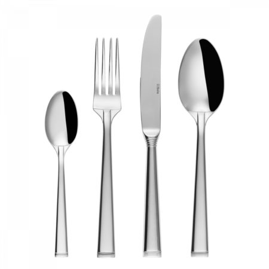

| 23.11. Pondělí | ||
| Jídlo | Název | |
| Polévka | Pórková | A-1,2,5,8 |
| A | Kuřecí prsíčka v bramboráku, zelný salát, jogurtový dressing | A-1,9,3 |
| B | Panenka na grilu, staročeské brambory, tatarská omáčka | A-4,8,3 |
| C | Pečené kachní stehno na jablkách, dušené zelí, variace knedlíků | A-5,7,3 |
| D | Azu po tatarsku, hranolky | A-5,7,6 |
| V1 | Smažený kuřecí řízek, bramborová kaše, sterilovaný okurek | A-4,5,3 |
| 24.11. Úterý | ||
| Jídlo | Název | |
| Polévka | Kmínová s vejcem | A-1,4,9 |
| A | Kuřecí špíz se švestkami a slaninou, šťouchané brambory | A-1,4,7 |
| B | Vykostěné vepřové koleno na pivě s křenem a hořčicí, okurek, kozí rohy, pečivo | A-1,5,7 |
| C | Pečené kachní stehno na jablkách, dušené zelí, variace knedlíků | A-5,3,9 |
| D | Vídeňský guláš s cibulkou, houskový knedlík | A-1,2 |
| V1 | Kuřecí prsa po indicku, jasmínová rýže | A-1,7,3 |
| 25.11. Středa | ||
| Jídlo | Název | |
| Polévka | Kulajda | A-1,4,8 |
| A | Smažená kuřecí kapsa, šťouchané brambory | A-7,5,9 |
| B | Brněnský drak, hranolky, americký dresing | A-1,5,9 |
| C | Pečené kachní stehno na jablkách, dušené zelí, variace knedlíků | A-7,3,6 |
| D | Pečené kuře, jasmínová rýže | A-1,4,7 |
| V1 | Špagety Bolognese sypané sýrem | A-1,4,9 |
| 26.11. Čtvrtek | ||
| Jídlo | Název | |
| Polévka | Kmínová s vejcem | A-1,4,7 |
| A | Americké fazole s kuřecími kousky a kukuřicí, pečivo | A-1,5,9 |
| B | Kuřecí plátek v sýrovém těstíčku, vařené brambory, tatarská omáčka | A-1,5,9 |
| C | Hovězí nudličky Stroganov, hranolky | A-1,4,7 |
| D | Pečené kachní stehno na jablkách, dušené zelí, variace knedlíků | A-1,5,8 |
| V1 | Halušky s kysaným zelím a slaninou | A-1,4,6 |
| 27.11. Pátek | ||
| Jídlo | Název | |
| Polévka | Hovězí vývar s nudlemi a zeleninou | A-4,2,5 |
| A | Cordon Bleu, hranolky, tatarská omáčka | A-1,2,6 |
| B | Vepřová panenka plněná klobásou, americké brambory, česnekový dressing | A-4,7,9 |
| C | Pečené kachní stehno na jablkách, dušené zelí, variace knedlíků | A-1,4,8 |
| D | Hrachová kaše s uzeninou, sterilovaný okurek, pečivo | A-1,4,7 |
| V1 | Mexický guláš, rýže s hráškem sypaná sýrem | A-1,5,8 |